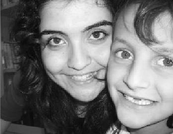

Mine konuşma engelliydi. Seminer bitiminde, herkes dağıldıktan sonra sırasına gitti ve forma bir şeyler çizmeye başladı. El ele tutuşan iki kişi, birisi küçük, birisi büyük ve topuklu ayakkabıları var ve aralarında bir kalp. Seminer ile ilgili düşüncelerini yazması gereken kısma da bir ev çizmiş… (Nazlı Özdil)
Nazlı'yı toplantılarda beyaz uğur böceği tişörtü ve kocaman gülümsemesiyle hatırlıyorum. İçten, sıcak ve akıllı Mine'den aldığı o küçük kalp ve ev resmi bir insanın hayatında alabileceği en güzel hediyelerden biridir. Sevgili Nazlı, sağ ol emeklerin için.